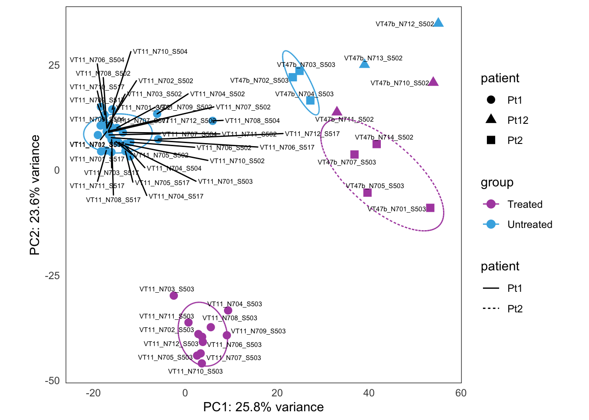
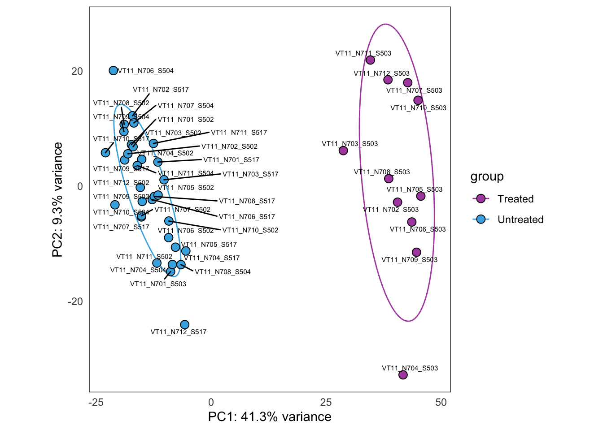
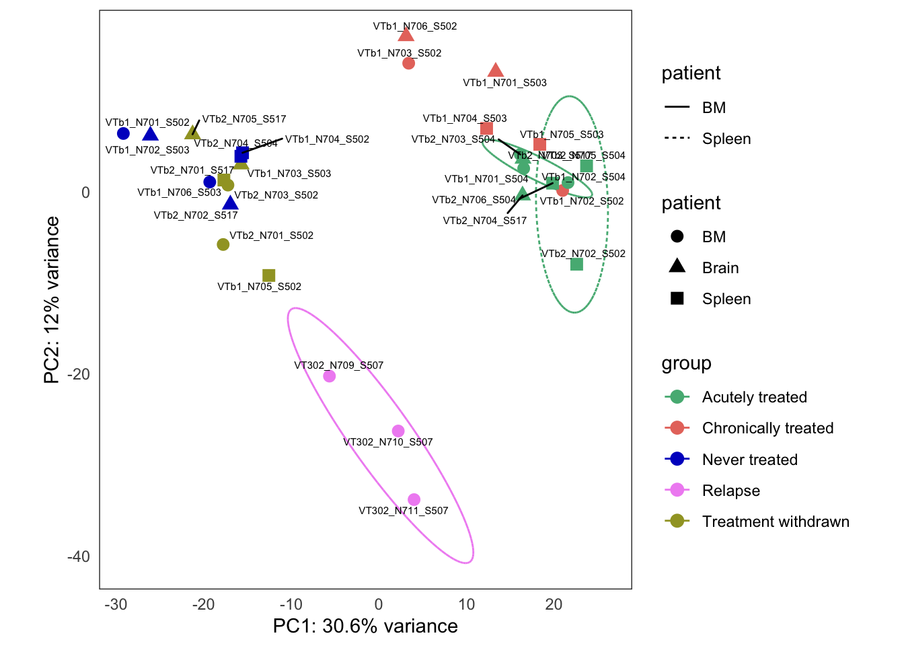

Last updated: 2021-08-16
Checks: 7 0
Knit directory: Turati_NatCancer_2021/
This reproducible R Markdown analysis was created with workflowr (version 1.6.2). The Checks tab describes the reproducibility checks that were applied when the results were created. The Past versions tab lists the development history.
Great! Since the R Markdown file has been committed to the Git repository, you know the exact version of the code that produced these results.
Great job! The global environment was empty. Objects defined in the global environment can affect the analysis in your R Markdown file in unknown ways. For reproduciblity it’s best to always run the code in an empty environment.
The command set.seed(20200627) was run prior to running the code in the R Markdown file. Setting a seed ensures that any results that rely on randomness, e.g. subsampling or permutations, are reproducible.
Great job! Recording the operating system, R version, and package versions is critical for reproducibility.
Nice! There were no cached chunks for this analysis, so you can be confident that you successfully produced the results during this run.
Great job! Using relative paths to the files within your workflowr project makes it easier to run your code on other machines.
Great! You are using Git for version control. Tracking code development and connecting the code version to the results is critical for reproducibility.
The results in this page were generated with repository version 9254340. See the Past versions tab to see a history of the changes made to the R Markdown and HTML files.
Note that you need to be careful to ensure that all relevant files for the analysis have been committed to Git prior to generating the results (you can use wflow_publish or wflow_git_commit). workflowr only checks the R Markdown file, but you know if there are other scripts or data files that it depends on. Below is the status of the Git repository when the results were generated:
Ignored files:
Ignored: .Rhistory
Ignored: .Rproj.user/
Ignored: bulkRNA/
Ignored: data/bulk4_counts.rda
Ignored: data/bulk4_dds.rda
Ignored: data/paper_palette.rda
Ignored: data/signatures.rda
Ignored: output/deseq2-mini_bulk4_dds.3pts-Treated-vs-Untreated.rds
Ignored: output/deseq2-mini_bulk4_dds.pt1-Treated-vs-Untreated.rds
Ignored: output/deseq2-mini_bulk4_dds.pt12-Treated-vs-Untreated.rds
Ignored: output/deseq2-mini_bulk4_dds.pt13-Treated-vs-Untreated.rds
Ignored: output/deseq2-mini_bulk4_dds.pt2-Acutely treated-vs-Chronically treated.rds
Ignored: output/deseq2-mini_bulk4_dds.pt2-Acutely treated-vs-Never treated.rds
Ignored: output/deseq2-mini_bulk4_dds.pt2-Chronically treated-vs-Never treated.rds
Ignored: output/deseq2-mini_bulk4_dds.pt2-Relapse-vs-Never treated.rds
Ignored: output/deseq2-mini_bulk4_dds.pt2-Treatment withdrawn-vs-Never treated.rds
Ignored: output/fgsea_results.RDS
Ignored: output/figures/ExtFig5a_pca_3patients.pdf
Ignored: output/figures/ExtFig5b_pca_treatment_response.pdf
Ignored: output/figures/Fig5C_fgsea_selected_signatures.pdf
Ignored: output/figures/ItemS2.pdf
Ignored: output/tables/ExtFig5a_bulkRNAseq_data.xlsx
Ignored: output/tables/ExtFig5b_bulkRNAseq_data.xlsx
Note that any generated files, e.g. HTML, png, CSS, etc., are not included in this status report because it is ok for generated content to have uncommitted changes.
These are the previous versions of the repository in which changes were made to the R Markdown (analysis/bulkRNA-pca.Rmd) and HTML (docs/bulkRNA-pca.html) files. If you’ve configured a remote Git repository (see ?wflow_git_remote), click on the hyperlinks in the table below to view the files as they were in that past version.
| File | Version | Author | Date | Message |
|---|---|---|---|---|
| html | b6f5b35 | Javier Herrero | 2021-08-13 | Build site. |
| html | 537463a | Javier Herrero | 2021-08-13 | Update site |
| Rmd | 146911e | Javier Herrero | 2021-08-13 | Adding Bulk RNAseq / PCA page |
| html | 146911e | Javier Herrero | 2021-08-13 | Adding Bulk RNAseq / PCA page |
library(ggbiplot)
library(tidyverse)
library(DESeq2)
# knitr::opts_chunk$set(cache = T, autodep = T)num_of_genes.pca <- 1000In this document, we are looking at the main components separating the samples, using PCA as an analyisis tool. We will use the top 1000 most variable genes.
Please refer to the Data - Bulk RNAseq page for more info.
data("bulk4_dds")
data("paper_palette")plot_PCAs_from_vst <- function(vst, num.genes = 1000) {
gene_variance <- rowVars(assay(vst))
# select the 1000 top genes by variance
selected_genes <- order(gene_variance, decreasing=TRUE) %>% head(n = num.genes)
# perform a PCA on the data in assay(x) for the selected genes
pca <- prcomp(t(assay(vst)[selected_genes, ]))
pca_perc_variance <- round(1000 * pca$sdev^2 / sum(pca$sdev^2)) / 10
pcaData <- pca$x[, 1:2] %>%
as.data.frame() %>%
rownames_to_column(var = "sample") %>%
left_join(colData(vst) %>% as_tibble(), by = c("sample"))
range_x <- range(pcaData$PC1)
range_y <- range(pcaData$PC2)
if (length(unique(pcaData$patient)) > 1) {
ell_patients_groups <- pcaData %>% group_by(patient, group) %>%
dplyr::summarise(n = n()) %>% filter(n > 2)
ell <- list()
apply(ell_patients_groups, 1, function(x) {
this_patient = x[1]
this_group = x[2]
data <- pcaData %>% filter(patient == this_patient & group == this_group)
this_ell <- car::dataEllipse(x = data$PC1, y = data$PC2,
levels = 0.68, segments = 100,
draw = F)
ell[[paste(this_patient, this_group)]] <<-
tibble(patient = this_patient, group = this_group,
x = this_ell[1:100, 1], y = this_ell[1:100, 2],
xend = this_ell[c(2:100, 1), 1], yend = this_ell[c(2:100, 1), 2])
})
ell <- Reduce(rbind, ell)
g2 <- ggplot(pcaData, aes(PC1, PC2))
if (length(ell) > 0) {
g2 <- g2 +
geom_segment(data = ell,
aes(x=x, y=y, xend=xend, yend=yend,
group=group, col=group, linetype = patient))
}
g2 <- g2 +
geom_point(aes(col = group, shape = patient), size = 3) +
# ggrepel::geom_text_repel(aes(label = sample), size = 2) +
xlab(paste0("PC1: ", pca_perc_variance[1],"% variance")) +
ylab(paste0("PC2: ", pca_perc_variance[2],"% variance")) +
scale_colour_manual(values = paper_palette) +
scale_fill_manual(values = paper_palette) +
coord_fixed(ratio = diff(range_x) / diff(range_y)) +
theme_bw(base_line_size = 0)
g1 <- g2 +
ggrepel::geom_text_repel(aes(label = sample), size = 2)
ell_groups <- pcaData %>% group_by(group) %>%
dplyr::summarise(n = n()) %>% filter(n > 2) %>% pull(group)
ell <- lapply(ell_groups, function(name) {
data <- pcaData %>% filter(group == name)
car::dataEllipse(x = data$PC1, y = data$PC2,
levels = 0.68, segments = 100,
draw = F)
})
names(ell) <- ell_groups
ell <- lapply(names(ell), function(name) {
tibble(group = name, x = ell[[name]][1:100, 1], y = ell[[name]][1:100, 2],
xend = ell[[name]][c(2:100, 1), 1], yend = ell[[name]][c(2:100, 1), 2])
})
ell <- Reduce(rbind, ell)
g3 <- ggplot(pcaData, aes(PC1, PC2))
if (length(ell) > 0) {
g3 <- g3 +
geom_segment(data = ell,
aes(x = x, y = y, xend = xend, yend = yend,
group = group, col = group))
}
g3 <- g3 +
stat_ellipse(aes(col = group), level = 0.68, type = "norm") +
geom_point(aes(col = group, shape = patient), size = 3) +
# ggrepel::geom_text_repel(aes(label = sample), size = 2) +
xlab(paste0("PC1: ", pca_perc_variance[1],"% variance")) +
ylab(paste0("PC2: ", pca_perc_variance[2],"% variance")) +
scale_colour_manual(values = paper_palette) +
scale_fill_manual(values = paper_palette) +
coord_fixed(ratio = diff(range_x) / diff(range_y)) +
theme_bw(base_line_size = 0)
print(g1)
print(g2)
print(g3)
return(invisible(list(pcaData, g1, g2, g3)))
} else {
ell_groups <- pcaData %>% group_by(group) %>%
dplyr::summarise(n = n()) %>% filter(n > 2) %>% pull(group)
ell <- lapply(ell_groups, function(name) {
data <- pcaData %>% filter(group == name)
car::dataEllipse(x = data$PC1, y = data$PC2,
levels = 0.68, segments = 100,
draw = F)
})
names(ell) <- ell_groups
ell <- lapply(names(ell), function(name) {
tibble(group = name, x = ell[[name]][1:100, 1], y = ell[[name]][1:100, 2],
xend = ell[[name]][c(2:100, 1), 1], yend = ell[[name]][c(2:100, 1), 2])
})
ell <- Reduce(rbind, ell)
g2 <- ggplot(pcaData, aes(PC1, PC2))
if (length(ell) > 0) {
g2 <- g2 +
geom_segment(data = ell,
aes(x = x, y = y, xend = xend, yend = yend,
group = group, col = group))
}
g2 <- g2 +
geom_point(aes(fill = group), shape = 21, color = "black", size = 3) +
xlab(paste0("PC1: ", pca_perc_variance[1],"% variance")) +
ylab(paste0("PC2: ", pca_perc_variance[2],"% variance")) +
scale_colour_manual(values = paper_palette) +
scale_fill_manual(values = paper_palette) +
coord_fixed(ratio = diff(range_x) / diff(range_y)) +
theme_bw(base_line_size = 0)
g1 <- g2 +
ggrepel::geom_text_repel(aes(label = sample), size = 2)
print(g1)
print(g2)
return(invisible(list(pcaData, g1, g2)))
}
}We transform the data all together with the VST transformation function. This essentially log-transforms the counts while taking into account the library size (see DESeq2 manual for more info).
bulk4_vst <- vst(bulk4_dds)This is the initial PCA, built from the bulk4_dds data set, using VST-transformed counts.
this_bulk_vst <- bulk4_vst[, colData(bulk4_dds)$patient %in% c("PT1", "PT12", "PT13")]
this_bulk_vst$patient <- factor(c("Pt1", "Pt2", "Pt12", "Pt13")[as.numeric(this_bulk_vst$patient)])
plots <- plot_PCAs_from_vst(this_bulk_vst)`summarise()` regrouping output by 'patient' (override with `.groups` argument)`summarise()` ungrouping output (override with `.groups` argument)
| Version | Author | Date |
|---|---|---|
| 146911e | Javier Herrero | 2021-08-13 |
| Version | Author | Date |
|---|---|---|
| 146911e | Javier Herrero | 2021-08-13 |
output folder
plots[[4]] +
coord_cartesian() +
guides(color = "none") +
guides(shape = guide_legend(title = "Patient")) +
theme(legend.position = "top")Coordinate system already present. Adding new coordinate system, which will replace the existing one.
| Version | Author | Date |
|---|---|---|
| 146911e | Javier Herrero | 2021-08-13 |
ggsave("output/figures/ExtFig5a_pca_3patients.pdf",
device = "pdf", width = 5, height = 4, scale = 0.8)
excel_data <- plots[[1]]
wb <- openxlsx::createWorkbook()
ws <- openxlsx::addWorksheet(wb, "ExtFig5a PCA bulk RNAseq")
openxlsx::writeDataTable(wb, sheet = ws, x = excel_data,
rowNames = F, tableStyle = "none", withFilter = F)
openxlsx::setColWidths(wb, ws, cols = 1:ncol(excel_data), widths = "auto")
openxlsx::addStyle(wb, ws, rows = 1, cols = 1:ncol(excel_data),
style = openxlsx::createStyle(textDecoration = "bold"))
openxlsx::addStyle(wb, ws, rows = 1:nrow(excel_data) + 1, cols = 1,
style = openxlsx::createStyle(textDecoration = "bold"))
openxlsx::saveWorkbook(wb, "output/tables/ExtFig5a_bulkRNAseq_data.xlsx", overwrite = TRUE)Same as above, but using samples from PT1 only.
this_bulk_vst <- bulk4_vst[, colData(bulk4_dds)$patient %in% c("PT1")]
plot_PCAs_from_vst(this_bulk_vst)`summarise()` ungrouping output (override with `.groups` argument)
| Version | Author | Date |
|---|---|---|
| 146911e | Javier Herrero | 2021-08-13 |
Same as above, but using samples from PT12 only.
this_bulk_vst <- bulk4_vst[, colData(bulk4_dds)$patient %in% c("PT12")]
plot_PCAs_from_vst(this_bulk_vst)`summarise()` ungrouping output (override with `.groups` argument)
| Version | Author | Date |
|---|---|---|
| 146911e | Javier Herrero | 2021-08-13 |
Same as above, but using samples from PT13 only.
this_bulk_vst <- bulk4_vst[, colData(bulk4_dds)$patient %in% c("PT13")]
plot_PCAs_from_vst(this_bulk_vst)`summarise()` ungrouping output (override with `.groups` argument)
| Version | Author | Date |
|---|---|---|
| 146911e | Javier Herrero | 2021-08-13 |
This is the initial PCA, built from the bulk4_dds data set, using VST-transformed counts. The data correspond to PT2, where we have five types of samples:
this_bulk_vst <- bulk4_vst[, colData(bulk4_dds)$patient %in% c("PT2")]
hack_bulk_vst <- this_bulk_vst
hack_bulk_vst$patient <- hack_bulk_vst$tissue
plots <- plot_PCAs_from_vst(hack_bulk_vst)`summarise()` regrouping output by 'patient' (override with `.groups` argument)`summarise()` ungrouping output (override with `.groups` argument)
| Version | Author | Date |
|---|---|---|
| 146911e | Javier Herrero | 2021-08-13 |
Too few points to calculate an ellipseWarning: Removed 1 row(s) containing missing values (geom_path).
| Version | Author | Date |
|---|---|---|
| 146911e | Javier Herrero | 2021-08-13 |
output folder
plots[[4]] +
coord_cartesian() +
guides(color = "none") +
guides(fill = "none") +
guides(shape = guide_legend(title = "Tissue")) +
theme(legend.position = "top")Coordinate system already present. Adding new coordinate system, which will replace the existing one.Too few points to calculate an ellipseWarning: Removed 1 row(s) containing missing values (geom_path).
| Version | Author | Date |
|---|---|---|
| 146911e | Javier Herrero | 2021-08-13 |
ggsave("output/figures/ExtFig5b_pca_treatment_response.pdf",
device = "pdf", width = 6, height = 4, scale = 0.8)Too few points to calculate an ellipseWarning: Removed 1 row(s) containing missing values (geom_path).excel_data <- plots[[1]]
wb <- openxlsx::createWorkbook()
ws <- openxlsx::addWorksheet(wb, "ExtFig5b PCA bulk RNAseq")
openxlsx::writeDataTable(wb, sheet = ws, x = excel_data,
rowNames = F, tableStyle = "none", withFilter = F)
openxlsx::setColWidths(wb, ws, cols = 1:ncol(excel_data), widths = "auto")
openxlsx::addStyle(wb, ws, rows = 1, cols = 1:ncol(excel_data),
style = openxlsx::createStyle(textDecoration = "bold"))
openxlsx::addStyle(wb, ws, rows = 1:nrow(excel_data) + 1, cols = 1,
style = openxlsx::createStyle(textDecoration = "bold"))
openxlsx::saveWorkbook(wb, "output/tables/ExtFig5b_bulkRNAseq_data.xlsx", overwrite = TRUE)
sessionInfo()R version 3.6.3 (2020-02-29)
Platform: x86_64-apple-darwin15.6.0 (64-bit)
Running under: macOS Catalina 10.15.7
Matrix products: default
BLAS: /Library/Frameworks/R.framework/Versions/3.6/Resources/lib/libRblas.0.dylib
LAPACK: /Library/Frameworks/R.framework/Versions/3.6/Resources/lib/libRlapack.dylib
locale:
[1] en_GB.UTF-8/en_GB.UTF-8/en_GB.UTF-8/C/en_GB.UTF-8/en_GB.UTF-8
attached base packages:
[1] parallel stats4 grid stats graphics grDevices utils
[8] datasets methods base
other attached packages:
[1] DESeq2_1.26.0 SummarizedExperiment_1.16.1
[3] DelayedArray_0.12.3 BiocParallel_1.20.1
[5] matrixStats_0.56.0 Biobase_2.46.0
[7] GenomicRanges_1.38.0 GenomeInfoDb_1.22.0
[9] IRanges_2.20.2 S4Vectors_0.24.4
[11] BiocGenerics_0.32.0 forcats_0.5.0
[13] stringr_1.4.0 dplyr_1.0.0
[15] purrr_0.3.3 readr_1.3.1
[17] tidyr_1.0.2 tibble_2.1.3
[19] tidyverse_1.3.0 ggbiplot_0.55
[21] scales_1.1.0 plyr_1.8.6
[23] ggplot2_3.3.1 workflowr_1.6.2
loaded via a namespace (and not attached):
[1] colorspace_1.4-1 ellipsis_0.3.0 rio_0.5.16
[4] rprojroot_1.3-2 htmlTable_1.13.3 XVector_0.26.0
[7] base64enc_0.1-3 fs_1.3.2 rstudioapi_0.11
[10] farver_2.0.3 ggrepel_0.8.2 bit64_0.9-7
[13] AnnotationDbi_1.48.0 lubridate_1.7.4 xml2_1.2.5
[16] splines_3.6.3 geneplotter_1.64.0 knitr_1.28
[19] Formula_1.2-3 jsonlite_1.6.1 broom_0.5.5
[22] annotate_1.64.0 cluster_2.1.0 dbplyr_1.4.2
[25] png_0.1-7 compiler_3.6.3 httr_1.4.1
[28] backports_1.1.5 assertthat_0.2.1 Matrix_1.2-18
[31] cli_3.0.0 later_1.0.0 acepack_1.4.1
[34] htmltools_0.5.1.1 tools_3.6.3 gtable_0.3.0
[37] glue_1.3.2 GenomeInfoDbData_1.2.2 Rcpp_1.0.4
[40] carData_3.0-3 cellranger_1.1.0 vctrs_0.3.0
[43] nlme_3.1-145 xfun_0.16 openxlsx_4.1.4
[46] rvest_0.3.5 lifecycle_0.2.0 XML_3.99-0.3
[49] zlibbioc_1.32.0 hms_0.5.3 promises_1.1.0
[52] RColorBrewer_1.1-2 curl_4.3 yaml_2.2.1
[55] memoise_1.1.0 gridExtra_2.3 rpart_4.1-15
[58] latticeExtra_0.6-29 stringi_1.4.6 RSQLite_2.2.0
[61] genefilter_1.68.0 checkmate_2.0.0 zip_2.2.0
[64] rlang_0.4.11 pkgconfig_2.0.3 bitops_1.0-6
[67] evaluate_0.14 lattice_0.20-40 labeling_0.3
[70] htmlwidgets_1.5.1 bit_1.1-15.2 tidyselect_1.1.0
[73] magrittr_1.5 R6_2.4.1 generics_0.0.2
[76] Hmisc_4.3-1 DBI_1.1.0 pillar_1.4.3
[79] haven_2.2.0 whisker_0.4 foreign_0.8-76
[82] withr_2.4.2 abind_1.4-5 survival_3.1-11
[85] RCurl_1.98-1.1 nnet_7.3-13 car_3.0-8
[88] modelr_0.1.6 crayon_1.3.4 rmarkdown_2.1
[91] jpeg_0.1-8.1 locfit_1.5-9.1 readxl_1.3.1
[94] data.table_1.12.8 blob_1.2.1 git2r_0.26.1
[97] reprex_0.3.0 digest_0.6.25 xtable_1.8-4
[100] httpuv_1.5.2 munsell_0.5.0